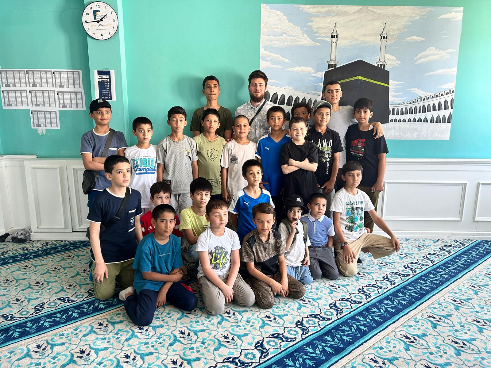

Uigurische Kinder kennengelernt
Unser Team besuchte eine Gruppe uigurischer Kinder, um ihre Lebenssituation besser zu verstehen und ihnen kleine Hilfen und Lernmaterialien zu überreichen. Es war ein bewegender Moment, die Freude der Kinder zu sehen und ihnen Unterstützung zukommen zu lassen.